modular planters
customizable plant holders
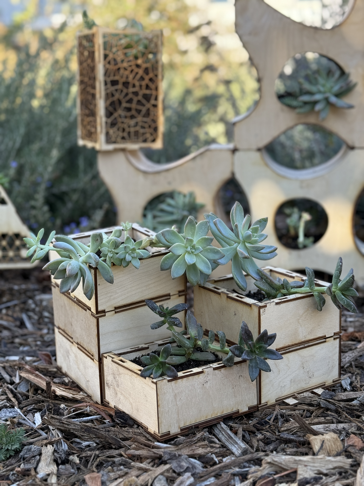
overview
Prior to this course I had never used a laser cutter before nor worked heavily on physical design projects where I actually made the prototypes. This project had us build a modular and functioning planter. The planters main structure can be repeated and connect to the original planter to allow for more plants, such as succulents to grow near one another. I was inspired by LEGOs and how they interlock with one another. I decided to incorporate this concept into my ideas for this project. I learned how to create paper and wood prototypes and learning about interlocking techniques when using wood.
I decided to create a plant holder that while modular (attaching to other pots) it can also change to the plants needs, meaning that the user can use the same pot for either the same plant forever or different plants whenever a plant dies if its seasonal or just needs to be replaced due to health reasons. For this project I used standard plywood and wood glue only for its creation to demonstrate that this could be set up as a kit which may have a market amongst plant enthusiasts.
ideation
I first worked on the base of the planter, ideating the needs of different types of plants in respect of their unique irrigation requirements. I started with the idea of an interchangeable base system that can allow for the user to pick either one with an irrigation system or one without, or instead a stacking bottom so it can layer onto a base piece. With this idea in mind I began the prototyping phase of my project.
prototyping
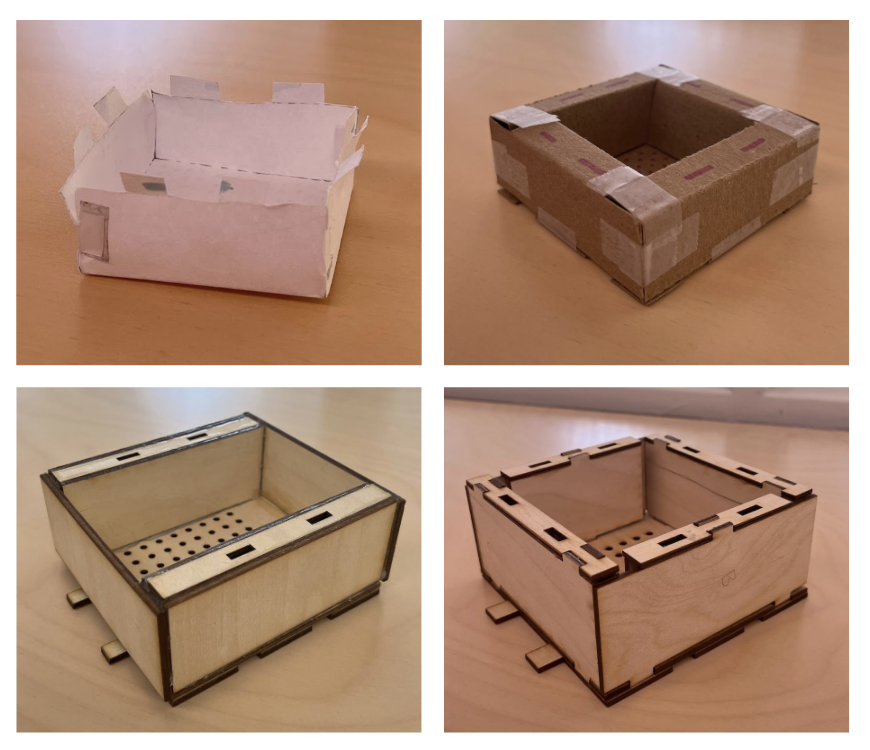
I began with a paper mock up of my idea. The base had an drainage system for plants that need to release excess water to avoid molding. The idea was to have tabs on the tops that allow it to click into another planter so it can become a taller planter, when a plant overtime needs more space for roots. With this tab idea, then plant would only need more soil on the bottom but would not need a completely new pot. I then moved to create a cardstock prototype when learning more about how laser cutters work and what specifications there are to a project. I found that the tab system would not be as simple as I thought it would be, so I instead opted for a system that allowed modules to be connect with a tab stuck through. I worked on two iterations of the base learning more about the dimensions required to get tabs on all four sides.
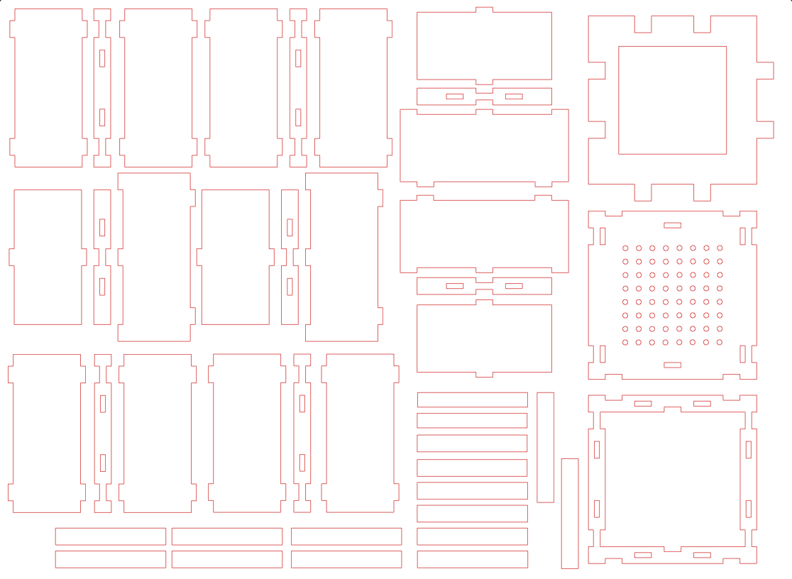
building
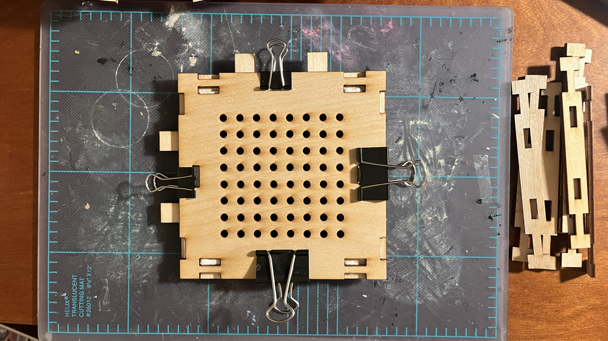
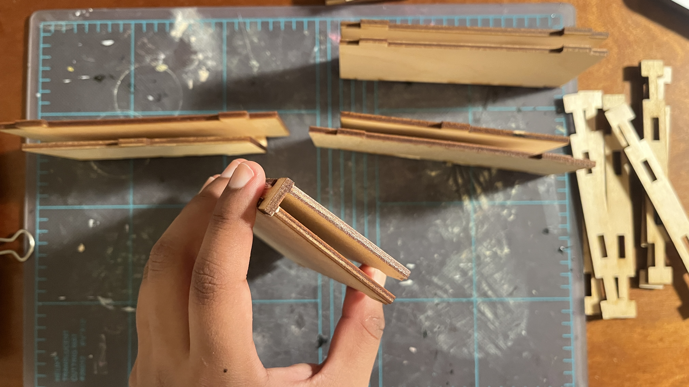
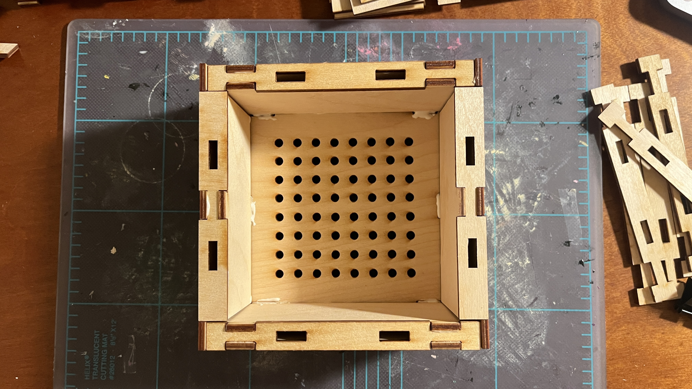
I started off with gluing down the base sliding plate for the modular system on the bottom. With a plate for drainage on top. The plate has holes meant to be used connecting the walls of the planter, which are required for the tab system. I glue together four wall pieces. Two that are equal length, and two that have one side longer and one side shorter so they can fit at a 90 degree angle of the other two walls. The last image included in this slide shows all four walls connected together with two holes in each wall for the tab system. Out of the process gluing the walls was the hardest part due to dry time of the wood glue. There is not a completely efficient way of letting the pieces dry without one them falling over, thus many of the wall pieces are not perfect 90 degrees with the wall side and the tab base. I however continued with the design process despite this flaw as it was a pretty minor issue. These walls are glued down to the base plate, and the base planter is complete. This process can be repeated with other swappable base pieces, such as one without a drainage system, or one with an open bottom so it can be stacked onto a base planter.
modular aspect
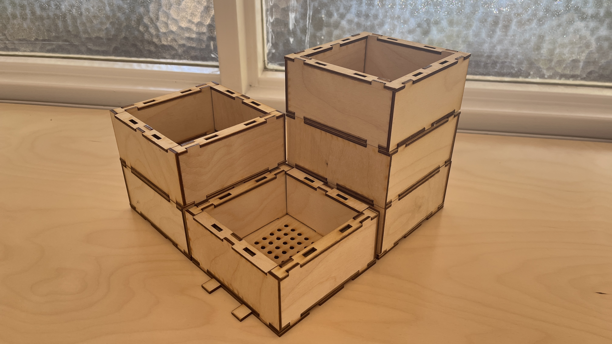
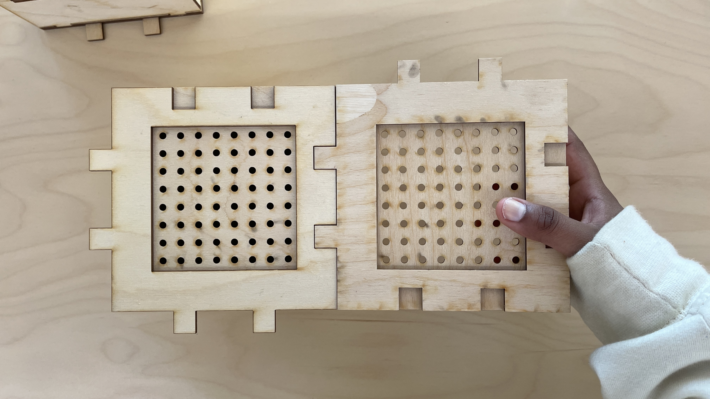
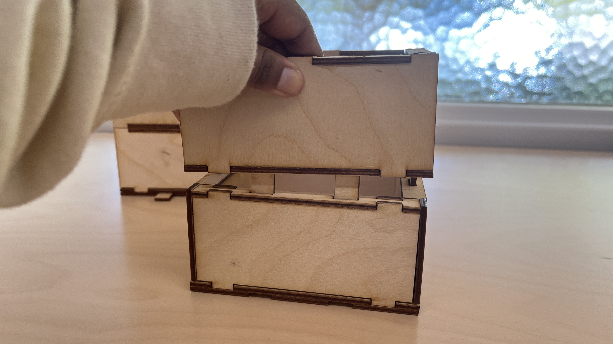
The planter has rods as tabs slotted into the holes on each side of its walls. The repeated systems can be slotted on top of the base planter. The planter can be built as high as the user would like. It also can extend out into multiple planters in any gridlike formation. The last image on the bottom displays two planters with drainage bases slotted together by the main base plate. The main base plate can be attached on even an open bottom to allow for the base plate to be on different level than the ground. I also believe that it would be easy to allow for the modular to even expand into a bigger pot if one of the walls was removed and instead two planters are connected as one. This really allows the the planter to change its pot size not by length but by width as well.
final model
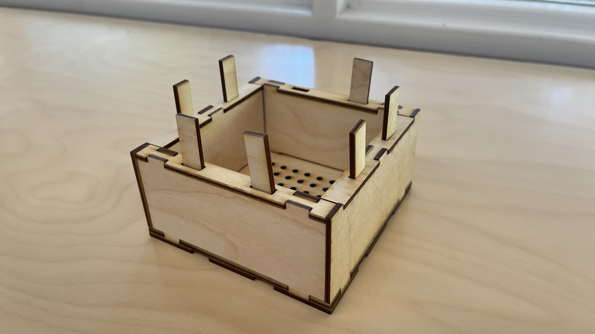
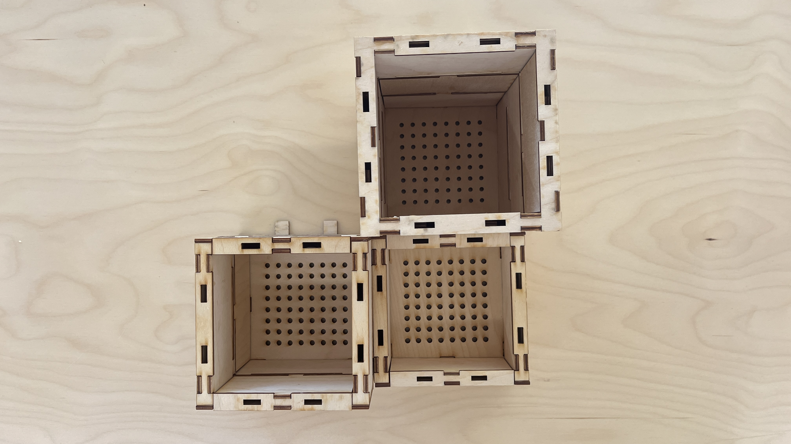
Here are some examples of various different length planters connected to each other in the modular form required for the project. They may remain slotted in or glued if the user prefers to have them permanent for a plant that will remain roughly the same size throughout its lifetime (such as a succulent or mini cactus). As mentioned before but not modeled, the walls can be removed if not glued down so that the pot can expand into a wider planter.
closing thoughts
Overall it was really cool getting to use the laser cutters for the first time to experiment different planter set ups and modular variations. The planter I designed I believe provides a sustainable and aesthetically pleasing solution for indoor plants (and also some outdoor plants as well). The interlocking panels allow for easy assembly and customization, allowing for a wide range of plant species and growth patterns. The system's modular nature eliminates the need for frequent repotting, reducing waste and promoting environmentally conscious practices.